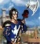
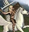
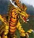
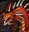

| Істота | Зображення | Ур. | Місто | (Урон) | (Атака) | (Захист) | (Здоров'я) | (Швидкість) | (Приріст) | Ціна (Золото) | Ціна (Ресурси) | Здібності | AI Value |
|---|---|---|---|---|---|---|---|---|---|---|---|---|---|
| Копейщик | 1 | Замок | 1 | 3 | 4 | 10 | 4 | 14 | 60 | - | - | 80 | |
| Алебардщик |  | 1 | Замок | 2 | 3 | 6 | 10 | 5 | 14 | 75 | - | Захист від Кавалерійського бонуса | 115 |
| Арбалетчик | 2 | Замок | 2 | 3 | 6 | 10 | 4 | 9 | 100 | - | Стрільба | 126 | |
| Стрілок | 2 | Замок | 2 | 3 | 6 | 10 | 6 | 9 | 150 | - | Подвійна стрільба | 184 | |
| Грифон | 3 | Замок | 3 | 6 | 8 | 25 | 6 | 7 | 200 | - | Політ, Відповідь на 2 атаки | 351 | |
| Королівський грифон | 3 | Замок | 3 | 6 | 9 | 25 | 9 | 7 | 240 | - | Політ, Відповідь на всі атаки | 448 | |
| Рицар | 4 | Замок | 6 | 9 | 10 | 35 | 5 | 4 | 300 | - | - | 445 | |
| Хрестоносець | 4 | Замок | 7 | 10 | 12 | 35 | 6 | 4 | 400 | - | Подвійний удар | 588 | |
| Монах | 5 | Замок | 10 | 12 | 12 | 30 | 5 | 3 | 400 | - | Стрільба | 582 | |
| Фанатик | 5 | Замок | 10 | 12 | 10 | 30 | 7 | 3 | 450 | - | Стрільба, Немає штрафу в б.б. | 750 | |
| Кавалерист | 6 | Замок | 15 | 25 | 15 | 100 | 7 | 2 | 1000 | - | Кавалерійський бонус | 1946 | |
| Чемпіон | 6 | Замок | 20 | 25 | 16 | 100 | 9 | 2 | 1200 | - | Кавалерійський бонус | 2100 | |
| Ангел | 7 | Замок | 50 | 50 | 20 | 200 | 12 | 1 | 3000 | 1 самоцвет | Політ, Бойовий дух +1, Ненависть до дияволів | 5019 | |
| Архангел | 7 | Замок | 50 | 50 | 30 | 250 | 18 | 1 | 5000 | 3 самоцвета | Політ, Бойовий дух +1, Ненависть до дияволів, Воскресіння | 8776 |
| Істота | Зображення | Ур. | Місто | (Урон) | (Атака) | (Захист) | (Здоров'я) | (Швидкість) | (Приріст) | Ціна (Золото) | Ціна (Ресурси) | Здібності | AI Value |
|---|---|---|---|---|---|---|---|---|---|---|---|---|---|
| Кентавр | 1 | Оплот | 2 | 3 | 5 | 8 | 6 | 14 | 70 | - | - | 100 | |
| Капітан кентаврів | 1 | Оплот | 2 | 3 | 6 | 10 | 8 | 14 | 90 | - | - | 138 | |
| Гном | 2 | Оплот | 2 | 4 | 6 | 20 | 3 | 8 | 120 | - | 20% опір | 138 | |
| Бойовий гном | 2 | Оплот | 2 | 4 | 7 | 20 | 5 | 8 | 150 | - | 40% опір | 209 | |
| Лісовий ельф | 3 | Оплот | 3 | 5 | 9 | 15 | 6 | 7 | 200 | - | Стрільба | 234 | |
| Великий ельф | 3 | Оплот | 3 | 5 | 9 | 15 | 7 | 7 | 225 | - | Подвійна стрільба | 331 | |
| Пегас |  | 4 | Оплот | 5 | 9 | 9 | 30 | 8 | 5 | 250 | - | Політ, Ціна магії +2 | 518 |
| Срібний пегас | 4 | Оплот | 5 | 9 | 10 | 30 | 12 | 5 | 275 | - | Політ, Ціна магії +2 | 532 | |
| Дендроїд-страж | 5 | Оплот | 10 | 14 | 9 | 55 | 3 | 3 | 350 | - | Оплетение | 517 | |
| Дендроїд-солдат | 5 | Оплот | 10 | 14 | 9 | 65 | 4 | 3 | 425 | - | Оплетение | 803 | |
| Єдиноріг | 6 | Оплот | 18 | 22 | 15 | 90 | 7 | 2 | 850 | - | Сліпота, Аура опору | 1806 | |
| Бойовий єдиноріг | 6 | Оплот | 18 | 22 | 15 | 110 | 9 | 2 | 950 | - | Сліпота, Аура опору | 2030 | |
| Зелений дракон | 7 | Оплот | 40 | 50 | 18 | 180 | 10 | 1 | 2400 | 1 кристал | Політ, Захист від магії 1-3 рівня, Дихання дракона | 4872 | |
| Золотий дракон |  | 7 | Оплот | 40 | 50 | 27 | 250 | 16 | 1 | 4000 | 2 кристала | Політ, Захист від магії 1-4 рівня, Дихання дракона | 8613 |
| Істота | Зображення | Ур. | Місто | (Урон) | (Атака) | (Захист) | (Здоров'я) | (Швидкість) | (Приріст) | Ціна (Золото) | Ціна (Ресурси) | Здібності | AI Value |
|---|---|---|---|---|---|---|---|---|---|---|---|---|---|
| Гремлін | 1 | Башня | 1 | 2 | 3 | 4 | 4 | 16 | 30 | - | - | 44 | |
| Мастер-гремлін |  |
1 | Башня | 1 | 2 | 4 | 4 | 5 | 16 | 40 | - | Стрільба | 66 |
| Кам'яна горгулья | 2 | Башня | 2 | 3 | 6 | 16 | 6 | 9 | 130 | - | Політ, Горгулья | 165 | |
| Обсидіанова горгулья | 2 | Башня | 2 | 3 | 7 | 16 | 9 | 9 | 160 | - | Політ, Горгулья | 201 | |
| Кам'яний голем | 3 | Башня | 4 | 5 | 7 | 30 | 3 | 6 | 150 | - | Голем, -50% урон від магії | 250 | |
| Сталевий голем | 3 | Башня | 4 | 5 | 9 | 35 | 5 | 6 | 200 | - | Голем, -75% урон від магії | 412 | |
| Маг | 4 | Башня | 7 | 9 | 11 | 25 | 5 | 4 | 350 | - | Стрільба, Немає штрафу в б.б., Немає штрафу за стіни, Ціна магії -2 | 570 | |
| Архимаг | 4 | Башня | 7 | 9 | 12 | 30 | 7 | 4 | 450 | - | Стрільба, Немає штрафу в б.б., Немає штрафу за стіни, Ціна магії -2 | 680 | |
| Джинн | 5 | Башня | 13 | 16 | 12 | 40 | 7 | 3 | 550 | - | Політ, Ненависть до Іфритів | 884 | |
| Мастер-джинн |  |
5 | Башня | 13 | 16 | 12 | 40 | 11 | 3 | 600 | - | Політ, Ненависть до Іфритів, Випадкова магія | 942 |
| Нага | 6 | Башня | 20 | 20 | 16 | 110 | 5 | 2 | 1100 | - | Безответність | 2016 | |
| Королівська нага | 6 | Башня | 30 | 30 | 16 | 110 | 7 | 2 | 1600 | - | Безответність | 2840 | |
| Гігант | 7 | Башня | 40 | 60 | 19 | 150 | 7 | 1 | 2000 | 1 самоцвет | Захист від розуму | 3718 | |
| Титан | 7 | Башня | 40 | 60 | 24 | 300 | 11 | 1 | 5000 | 2 самоцвета | Стрільба, Немає штрафу в б.б., Захист від розуму, Ненависть до Чорних драконів | 7500 |
| Істота | Зображення | Ур. | Місто | (Урон) | (Атака) | (Захист) | (Здоров'я) | (Швидкість) | (Приріст) | Ціна (Золото) | Ціна (Ресурси) | Здібності | AI Value |
|---|---|---|---|---|---|---|---|---|---|---|---|---|---|
| Скелет | 1 | Некрополіс | 1 | 3 | 5 | 4 | 4 | 12 | 60 | - | Нежить | 60 | |
| Скелет-воїн |  |
1 | Некрополіс | 1 | 3 | 6 | 6 | 5 | 12 | 70 | - | Нежить | 85 |
| Живий мертвець | 2 | Некрополіс | 2 | 3 | 5 | 15 | 3 | 8 | 100 | - | Нежить | 98 | |
| Зомбі | 2 | Некрополіс | 2 | 3 | 5 | 20 | 4 | 8 | 125 | - | Нежить, Хвороба | 128 | |
| Страж | 3 | Некрополіс | 3 | 5 | 7 | 18 | 5 | 7 | 200 | - | Політ, Нежить, Регенерація | 252 | |
| Привиди | 3 | Некрополіс | 3 | 5 | 7 | 18 | 7 | 7 | 230 | - | Політ, Нежить, Регенерація, Сжигание мани | 315 | |
| Вампир | 4 | Некрополіс | 5 | 8 | 10 | 30 | 6 | 4 | 360 | - | Політ, Нежить, Безответность | 555 | |
| Вампир-лорд | 4 | Некрополіс | 5 | 8 | 10 | 40 | 9 | 4 | 500 | - | Політ, Нежить, Безответность, Вампіризм | 783 | |
| Ліч | 5 | Некрополіс | 11 | 13 | 13 | 30 | 6 | 3 | 550 | - | Стрільба, хмара смерті, Нежить | 848 | |
| Могутній ліч | 5 | Некрополіс | 11 | 15 | 13 | 40 | 7 | 3 | 600 | - | Стрільба, хмара смерті, Нежить | 1079 | |
| Чорний рицар | 6 | Некрополіс | 15 | 30 | 16 | 120 | 7 | 2 | 1200 | - | Нежить, Прокляття | 2087 | |
| Рицар смерті | 6 | Некрополіс | 15 | 30 | 18 | 120 | 9 | 2 | 1500 | - | Нежить, Прокляття, Смертельний удар | 2382 | |
| Кістяний дракон | 7 | Некрополіс | 25 | 50 | 17 | 150 | 9 | 1 | 1800 | - | Політ, Бойовий дух -1 | 3388 | |
| Дракон-привид | 7 | Некрополіс | 25 | 50 | 19 | 200 | 14 | 1 | 3000 | 1 ртуть | Політ, Бойовий дух -1, Старость | 4696 |
| Істота | Зображення | Ур. | Місто | (Урон) | (Атака) | (Захист) | (Здоров'я) | (Швидкість) | (Приріст) | Ціна (Золото) | Ціна (Ресурси) | Здібності | AI Value |
|---|---|---|---|---|---|---|---|---|---|---|---|---|---|
| Троглодит | 1 | Темниця | 1 | 3 | 4 | 5 | 4 | 14 | 50 | - | Захист від Сліпоти та Окам'яніння | 59 | |
| Пекельний троглодит | 1 | Темниця | 1 | 3 | 5 | 6 | 5 | 14 | 65 | - | Захист від Сліпоти та Окам'яніння | 84 | |
| Гарпія | 2 | Темниця | 1 | 4 | 5 | 6 | 14 | 6 | 8 | 130 | Політ, Удар та повернення | 154 | |
| Гарпія-відьма | 2 | Темниця | 1 | 4 | 6 | 6 | 14 | 9 | 8 | 170 | Політ, Удар та повернення, Безвідповідність | 238 | |
| Бехолдер | 3 | Темниця | 3 | 5 | 9 | 7 | 22 | 5 | 7 | 250 | Стрільба, Немає штрафу в ближньому бою | 336 | |
| Споглядач | 3 | Темниця | 3 | 5 | 10 | 8 | 22 | 7 | 7 | 280 | Стрільба, Немає штрафу в ближньому бою | 367 | |
| Медуза | 4 | Темниця | 6 | 8 | 9 | 9 | 25 | 5 | 4 | 300 | Стрільба, Немає штрафу в ближньому бою, Окам'яніння | 517 | |
| Королева медуз | 4 | Темниця | 6 | 8 | 10 | 10 | 30 | 6 | 4 | 330 | Стрільба, Немає штрафу в ближньому бою, Окам'яніння | 577 | |
| Мінотавр |  |
5 | Темниця | 12 | 20 | 14 | 12 | 50 | 6 | 3 | 500 | Позитивна мораль | 835 |
| Король мінотаврів | 5 | Темниця | 12 | 20 | 15 | 15 | 50 | 8 | 3 | 575 | Позитивна мораль | 1068 | |
| Мантикора |  |
6 | Темниця | 14 | 20 | 15 | 80 | 7 | 2 | 850 | - | Політ | 1547 |
| Скорпікора | 6 | Темниця | 14 | 20 | 16 | 80 | 11 | 2 | 1050 | - | Політ, Параліч | 1589 | |
| Червоний дракон |  | 7 | Темниця | 40 | 50 | 19 | 180 | 11 | 1 | 2500 | 1 сірка | Політ, Захист від магії 1-3 рівня, Дихання дракона | 4702 |
| Чорний дракон | 7 | Темниця | 40 | 50 | 25 | 300 | 15 | 1 | 4000 | 2 сірки | Політ, Захист від магії, Дихання дракона, Ненависть до Титанів | 8721 |
| Істота | Зображення | Ур. | Місто | (Урон) | (Атака) | (Захист) | (Здоров'я) | (Швидкість) | (Приріст) | Ціна (Золото) | Ціна (Ресурси) | Здібності | AI Value |
|---|---|---|---|---|---|---|---|---|---|---|---|---|---|
| Біс | 1 | Інферно | 1 | 2 | 2 | 3 | 4 | 5 | 50 | - | - | 50 | |
| Чорт | 1 | Інферно | 1 | 2 | 4 | 4 | 4 | 7 | 60 | - | Крадіжка мани | 60 | |
| Гог | 2 | Інферно | 2 | 4 | 6 | 4 | 13 | 4 | 125 | - | Стрільба | 159 | |
| Магог | 2 | Інферно | 2 | 4 | 7 | 4 | 13 | 6 | 175 | - | Стрільба, Облако вогню | 240 | |
| Адська гонча | 3 | Інферно | 2 | 7 | 10 | 6 | 25 | 7 | 200 | - | - | 357 | |
| Цербер | 3 | Інферно | 2 | 7 | 10 | 8 | 25 | 8 | 250 | - | Три голови, Безвідповідність | 392 | |
| Демон | 4 | Інферно | 7 | 9 | 10 | 10 | 35 | 5 | 250 | - | - | 445 | |
| Рогатий демон | 4 | Інферно | 7 | 9 | 10 | 10 | 40 | 6 | 270 | - | - | 480 | Породження зла | 5 | Інферно | 13 | 17 | 13 | 45 | 6 | 3 | 500 | - | - | 765 |
| Адське відродження | 5 | Інферно | 13 | 17 | 13 | 45 | 7 | 3 | 700 | - | Підняття демонів | 1224 | |
| Іфрит | 6 | Інферно | 16 | 24 | 16 | 90 | 9 | 2 | 900 | - | Політ, Захист від вогню, Ненависть до Джинів | 1670 | |
| Султан-іфрит | 6 | Інферно | 16 | 24 | 16 | 90 | 13 | 2 | 1100 | - | Політ, Захист від вогню, Ненависть до Джинів, Вогняний щит | 1848 | |
| Диявол | 7 | Інферно | 30 | 40 | 19 | 160 | 11 | 1 | 2700 | 1 ртуть | Політ, Безвідповідність, Ненависть до Ангелів, Удача -1 | 5101 | |
| Архідиявол | 7 | Інферно | 30 | 40 | 26 | 200 | 17 | 1 | 4500 | 2 ртуті | Політ, Безвідповідність, Ненависть до Ангелів, Удача -2 | 7115 |
| Істота | Зображення | Ур. | Місто | (Урон) | (Атака) | (Захист) | (Здоров'я) | (Швидкість) | (Приріст) | Ціна (Золото) | Ціна (Ресурси) | Здібності | AI Value |
|---|---|---|---|---|---|---|---|---|---|---|---|---|---|
| Гнолл | 1 | Крепость | 2 | 3 | 3 | 5 | 6 | 4 | 50 | - | - | 56 | |
| Гнолл-мародер | 1 | Крепость | 2 | 3 | 4 | 6 | 6 | 5 | 70 | - | - | 90 | |
| Ящір | 2 | Крепость | 2 | 3 | 5 | 6 | 14 | 4 | 110 | - | Стрільба | 126 | |
| Ящір-воїн |  |
2 | Крепость | 2 | 5 | 6 | 8 | 15 | 5 | 140 | - | Стрільба | 156 |
| Змій | 3 | Крепость | 2 | 5 | 7 | 9 | 20 | 9 | 220 | - | Політ, Зняття заклинань | 268 | |
| Стрекоза | 3 | Крепость | 2 | 5 | 8 | 10 | 20 | 13 | 240 | - | Політ, Зняття заклинань, Слабкість | 312 | Василиск | 4 | Крепость | 6 | 10 | 11 | 35 | 5 | 4 | 325 | - | Окам'яніння | 552 |
| Великий василиск | 4 | Крепость | 6 | 10 | 12 | 40 | 7 | 4 | 400 | - | Окам'яніння | 714 | |
| Горгона | 5 | Крепость | 12 | 16 | 10 | 70 | 5 | 3 | 525 | - | - | 890 | |
| Могуча горгона | 5 | Крепость | 12 | 16 | 11 | 70 | 6 | 3 | 600 | - | Смертельний погляд | 1028 | |
| Виверна | 6 | Крепость | 14 | 18 | 14 | 70 | 7 | 2 | 800 | - | Політ | 1350 | |
| Виверна-монарх | 6 | Крепость | 18 | 22 | 14 | 70 | 11 | 2 | 1100 | - | Політ, Яд | 1518 | |
| Гідра | 7 | Крепость | 25 | 45 | 16 | 175 | 5 | 1 | 2200 | - | Окружаючий удар, Безвідповідність | 4120 | |
| Гідра хаоса | 7 | Крепость | 25 | 45 | 18 | 250 | 7 | 1 | 3500 | 1 сірка | Окружаючий удар, Безвідповідність | 5931 |
| Істота | Зображення | Ур. | Місто | (Урон) | (Атака) | (Захист) | (Здоров'я) | (Швидкість) | (Приріст) | Ціна (Золото) | Ціна (Ресурси) | Здібності | AI Value | Гоблін | 1 | Цитадель | 1 | 2 | 4 | 2 | 5 | 5 | 40 | - | - | 60 |
|---|---|---|---|---|---|---|---|---|---|---|---|---|---|
| Хобгоблін | 1 | Цитадель | 1 | 2 | 5 | 3 | 5 | 7 | 50 | - | - | 78 | |
| Наїздник на вовку | 2 | Цитадель | 2 | 4 | 7 | 5 | 10 | 6 | 100 | - | - | 130 | |
| Нальотчик | 2 | Цитадель | 3 | 4 | 8 | 5 | 10 | 8 | 140 | - | Подвійний удар | 203 | |
| Орк | 3 | Цитадель | 2 | 5 | 8 | 4 | 15 | 4 | 150 | - | Стрільба | 192 | |
| Орк-вождь | 3 | Цитадель | 2 | 5 | 8 | 4 | 20 | 5 | 165 | - | Стрільба | 240 | |
| Огр | 4 | Цитадель | 6 | 12 | 13 | 7 | 40 | 4 | 300 | - | - | 416 | |
| Огр-маг | 4 | Цитадель | 6 | 12 | 13 | 7 | 60 | 5 | 400 | - | Жага крові | 672 | |
| Птиця рух | 5 | Цитадель | 11 | 15 | 13 | 11 | 60 | 7 | 600 | - | Політ | 1027 | |
| Птиця грома | 5 | Цитадель | 11 | 15 | 13 | 11 | 60 | 11 | 700 | - | Політ, Удар блискавки | 1106 | |
| Циклоп | 6 | Цитадель | 16 | 20 | 15 | 12 | 70 | 6 | 750 | - | Стрільба, Атака стін | 1266 | |
| Король циклопів | 6 | Цитадель | 16 | 20 | 17 | 13 | 70 | 8 | 1100 | - | Стрільба, Атака стін | 1443 | |
| Чудище |  |
7 | Цитадель | 30 | 50 | 17 | 17 | 160 | 6 | 1500 | - | Знижує захист цілі | 3162 |
| Давнє чудище | 7 | Цитадель | 30 | 50 | 19 | 19 | 300 | 9 | 3000 | 1 кристал | Знижує захист цілі | 6168 |
| Істота | Зображення | Ур. | Місто | (Урон) | (Атака) | (Захист) | (Здоров'я) | (Швидкість) | (Приріст) | Ціна (Золото) | Ціна (Ресурси) | Здібності | AI Value |
|---|---|---|---|---|---|---|---|---|---|---|---|---|---|
| Маленька фея | 1 | Сопряжение | 1 | 2 | 2 | 2 | 3 | 7 | 25 | - | Політ | 55 | |
| Фея | 1 | Сопряжение | 1 | 3 | 2 | 2 | 3 | 9 | 30 | - | Політ, Безвідповідність | 95 | |
| Елементаль повітря | 2 | Сопряжение | 2 | 8 | 9 | 9 | 25 | 7 | 250 | - | Елементаль, Ненависть до Елементалів землі | 356 | |
| Штормовий елементаль | 2 | Сопряжение | 2 | 8 | 9 | 9 | 25 | 8 | 275 | - | Елементаль, Стрільба, Ненависть до елементалів землі, Захист від повітря | 486 | |
| Елементаль води | 3 | Сопряжение | 3 | 7 | 8 | 10 | 30 | 5 | 300 | - | Елементаль, Ненависть до Елементалів вогню | 315 | |
| Льодяний елементаль | 3 | Сопряжение | 3 | 7 | 8 | 10 | 30 | 6 | 375 | - | Елементаль, Стрільба, Ненависть до елементалів вогню, Захист від води | 380 | |
| Елементаль вогню | 4 | Сопряжение | 4 | 6 | 10 | 8 | 35 | 6 | 350 | - | Елементаль, Захист від вогню, Ненависть до Елементалів води | 345 | |
| Енергетичний елементаль | 4 | Сопряжение | 4 | 6 | 12 | 8 | 35 | 8 | 400 | - | Політ, Елементаль, Захист від вогню, Ненависть до Елементалів води, Захист від вогню | 470 | |
| Елементаль землі | 5 | Сопряжение | 4 | 8 | 10 | 10 | 40 | 4 | 400 | - | Елементаль, Ненависть до Елементалів повітря | 330 | |
| Магмовий елементаль | 5 | Сопряжение | 6 | 10 | 11 | 11 | 40 | 6 | 500 | - | Елементаль, Ненависть до Елементалів повітря, Захист від землі | 490 | |
| Психічний елементаль | 6 | Сопряжение | 10 | 20 | 15 | 13 | 75 | 7 | 950 | - | Елементаль, Окружаючий удар, Слабкий удар | 1669 | |
| Магічний елементаль | |||||||||||||
| Вогняна птиця | 7 | Сопряжение | 30 | 40 | 18 | 18 | 150 | 15 | 2000 | - | Політ, 50% Захист від вогню | 4336 | |
| Фенікс | 7 | Сопряжение | 30 | 40 | 21 | 18 | 200 | 21 | 3000 | 1 ртуть | Політ, Захист від вогню, Воскресіння з попелу, Дихання дракона | 6721 |
| Істота | Зображення | Ур. | Місто | (Урон) | (Атака) | (Захист) | (Здоров'я) | (Швидкість) | (Приріст) | Ціна (Золото) | Ціна (Ресурси) | Здібності | AI Value |
|---|---|---|---|---|---|---|---|---|---|---|---|---|---|
| Крестьянин | 1 | Нейтрал | 1 | 1 | 1 | 1 | 3 | 25 | 10 | - | 15 | ||
| Хоббит | 1 | Нейтрал | 1 | 3 | 4 | 2 | 4 | 5 | 15 | 40 | Стрільба, Положительная удача | 75 | |
| Наездник на кабане |  |
2 | Нейтрал | 2 | 3 | 6 | 5 | 15 | 6 | 8 | 150 | - | 145 |
| Вор | 2 | Нейтрал | 2 | 4 | 8 | 3 | 10 | 6 | 8 | 100 | Видение | 135 | |
| Кочевник | 3 | Нейтрал | 2 | 6 | 9 | 8 | 30 | 7 | 7 | 200 | Нет штрафа по песку | 345 | |
| Мумия | 3 | Нейтрал | 3 | 5 | 7 | 7 | 30 | 5 | 7 | 300 | Нежить, Проклятие | 270 | |
| Снайпер | 4 | Нейтрал | 8 | 10 | 12 | 10 | 15 | 9 | 4 | 400 | Стрільба, Нет штрафа за расстояние и стены | 585 | |
| Золотий голем | 5 | Нейтрал | 8 | 10 | 11 | 12 | 50 | 5 | 500 | - | Голем, -85% урона від магії | 600 | |
| Троль | 5 | Нейтрал | 10 | 15 | 14 | 7 | 40 | 7 | 500 | - | Регенерація | 1024 | |
| Алмазний голем | 6 | Нейтрал | 10 | 14 | 13 | 12 | 60 | 5 | 750 | - | Голем, -95% урона від магії | 775 | |
| Чародей |  |
6 | Нейтрал | 14 | 14 | 17 | 12 | 30 | 9 | 750 | - | Стрільба, Немає штрафу за стіни, Випадкова магія | 1210 |
| Сказочный дракон | 7 | Нейтрал | 20 | 30 | 20 | 20 | 500 | 15 | 10000 | 8 самоцвітів | Політ, Випадкова магія, Чарівне дзеркало | 19580 | |
| Ржавий дракон | 7 | Нейтрал | 50 | 50 | 30 | 30 | 750 | 17 | 15000 | 14 сірки | Політ, Кислотне дихання, Дихання дракона | 26433 | |
| Кристаллический дракон | 7 | Нейтрал | 60 | 75 | 40 | 40 | 800 | 16 | 20000 | 10 кристалів | 20% опір, +3 кристали на тиждень | 39338 | |
| Лазурный дракон | 7 | Нейтрал | 70 | 80 | 50 | 50 | 1000 | 19 | 30000 | 20 ртуті | Політ, Страх, Захист від магії, Дихання дракона | 78845 |